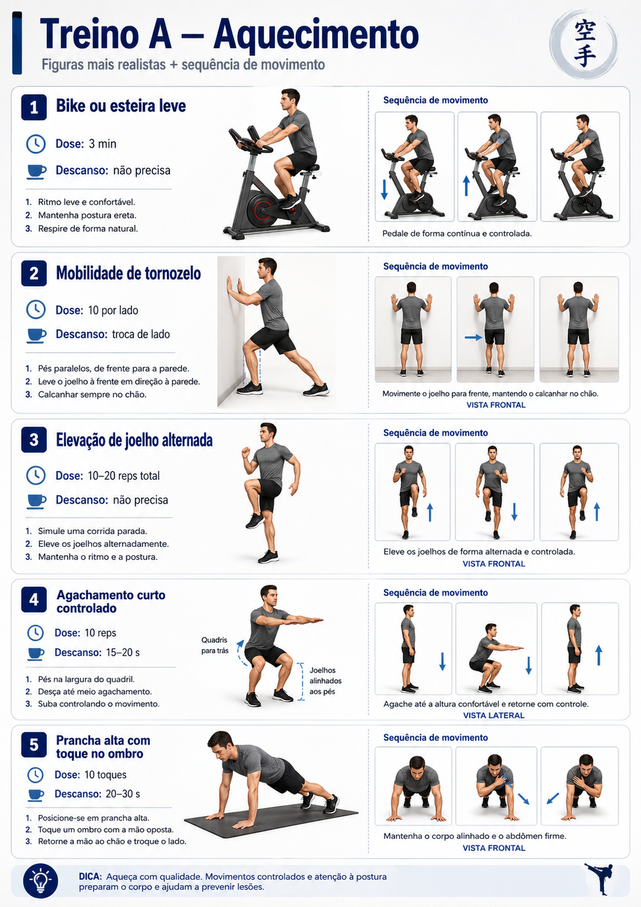
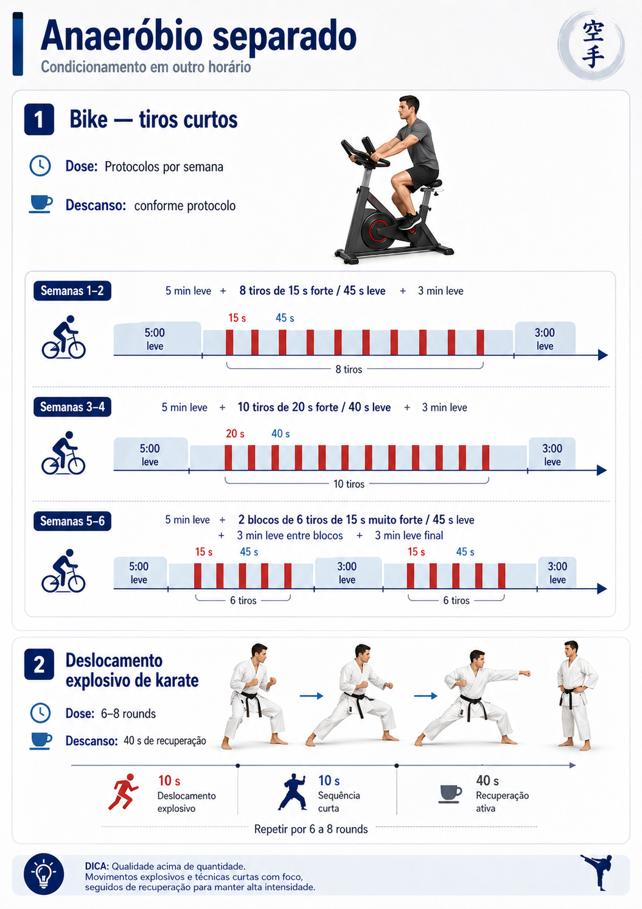
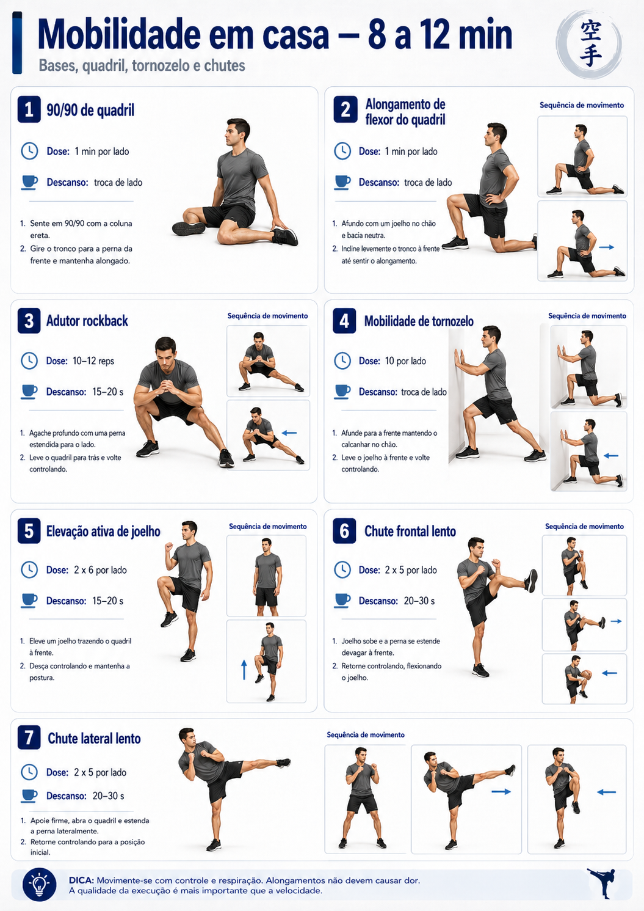

Treinos da academia do prédio
Agora usando as imagens novas. Cada página mostra os blocos do treino com a imagem grande e a lista logo abaixo, pensando no uso no celular.
70%kata
30%kumite
2xsemana base
mobilepronto

Treino A
Base, pernas, joelho e core
30–40 min
abrir treino
Treino B
Superior, ombro, lombar, rotação e potência
30–40 min
abrir treino
Anaeróbico
Tiros curtos na bike ou deslocamento de karate
12–20 min
abrir treino
Mobilidade em casa
Quadril, tornozelo e chutes
8–12 min
abrir treino